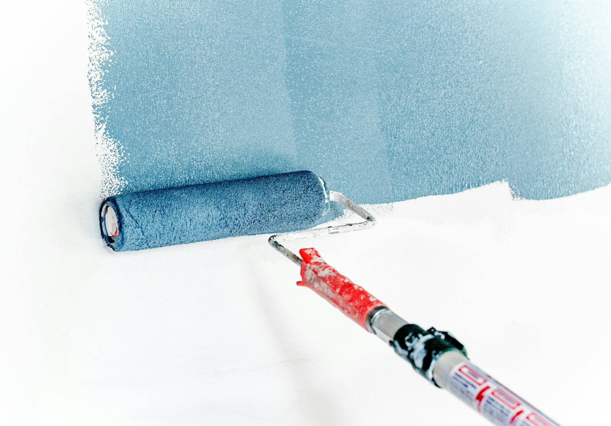
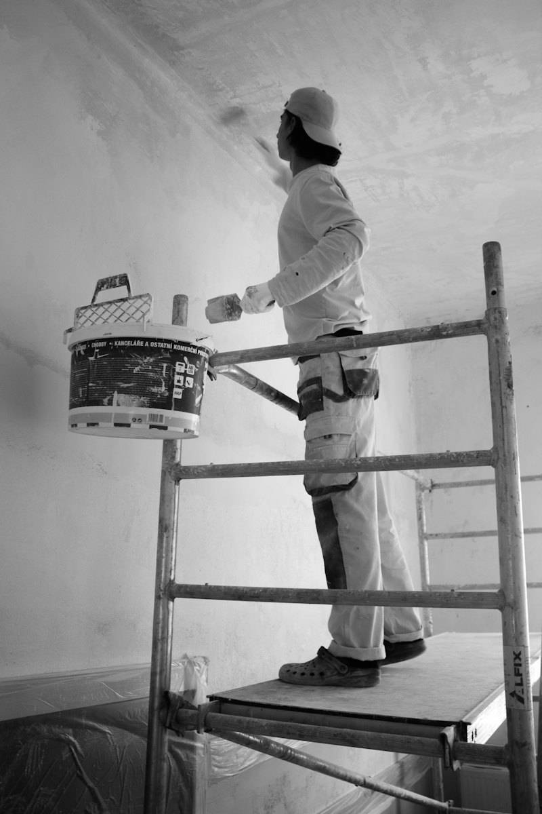

Malování, nátěry, úklid
Provádíme veškeré malířské a natěračské práce. Když chcete, po malování u Vás i uklidíme.
-
Malování pokojů
Byty, domy, kuchyně, chodby i schodiště.
-
Tapetování
Tapety na celou stěnu i jako akcent.
-
Nátěry dveří a oken
Dřevěné dveře, okna a zárubně.

-
Nátěry kovu
Radiátory, zábradlí a kovové prvky.

-
Úklid po malování
Po práci uklidíme, aby byl byt hned k užívání.
Z nepořádku čistý pokoj
Malování přinese do bytu nepořádek. Naším cílem je, aby po nás zůstal vymalovaný a uklizený byt.
Domluvíme se
Zavoláte nebo pošlete SMS a domluvíme rozsah práce a termín.
Vymalujeme
Malování a nátěry podle domluvy, místnost po místnosti.
Uklidíme
Pokud chcete, po malování u Vás uklidíme.
Kolik metrů vymalovat
Zadejte rozměry místnosti. Plochu stěn a stropu pak stačí říct do telefonu nebo napsat do SMS.
Barva, štětec, váleček


Časté dotazy
Uklidíte po malování?
Ano. Úklid po malování nabízíme jako službu navíc, stačí to říct při domluvě.
Kolik malování stojí?
Záleží na ploše a rozsahu práce. Cenu Vám řekneme při domluvě, plochu si můžete předem spočítat výše.
Jak se objednat?
Zavolejte na 731 614 442, nebo pošlete SMS přes formulář níže. Ozveme se a domluvíme se na termínu.
Kam jezdíte?
Sídlíme v Karviné-Hranicích. Karviná a okolí, vzdálenější místa se domluvíme po telefonu.
Musím vystěhovat pokoj?
Domluvíme se předem, co je potřeba odnést a co jen zakryjeme.

Domluvte si malování
731 614 442Vyplňte formulář a v telefonu se Vám otevře hotová SMS. Stačí ji odeslat.